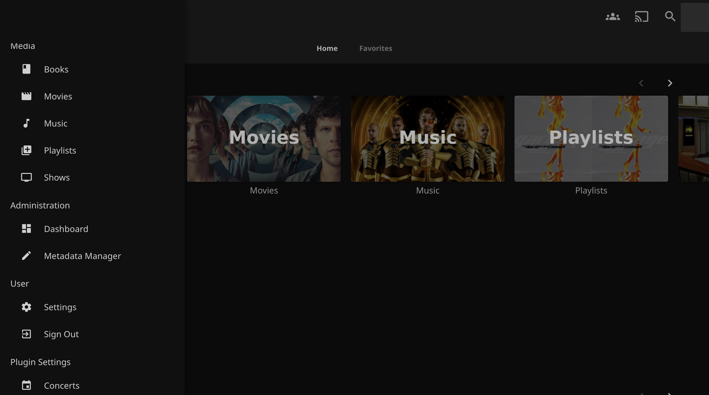
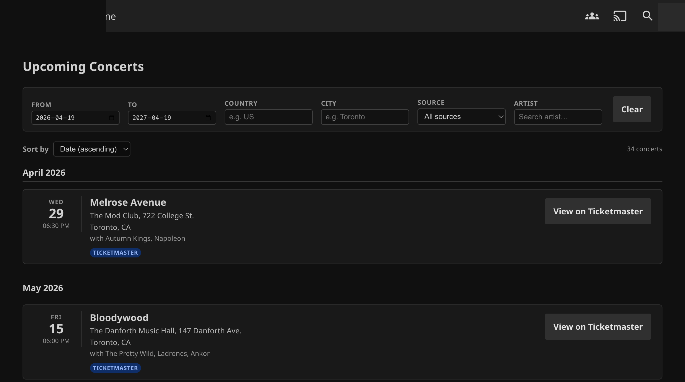
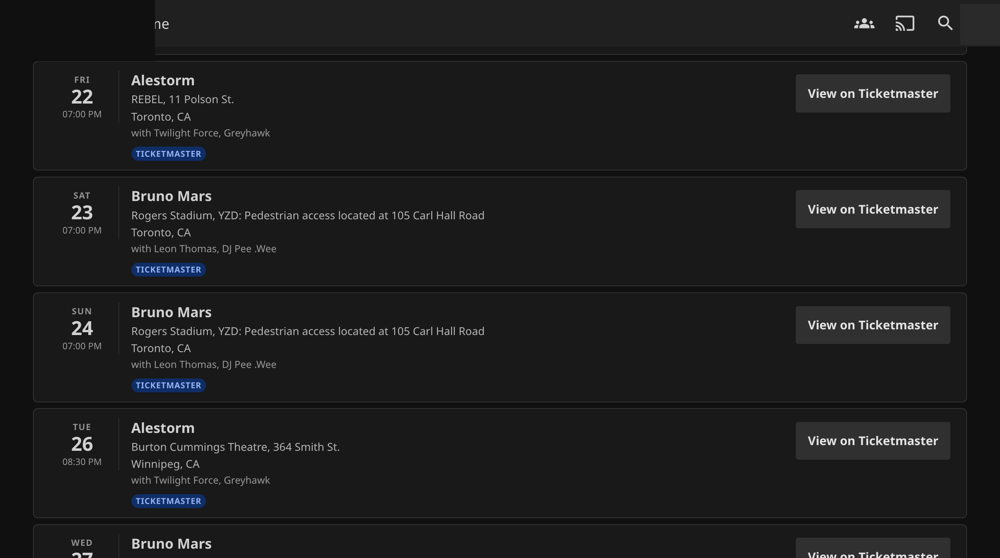
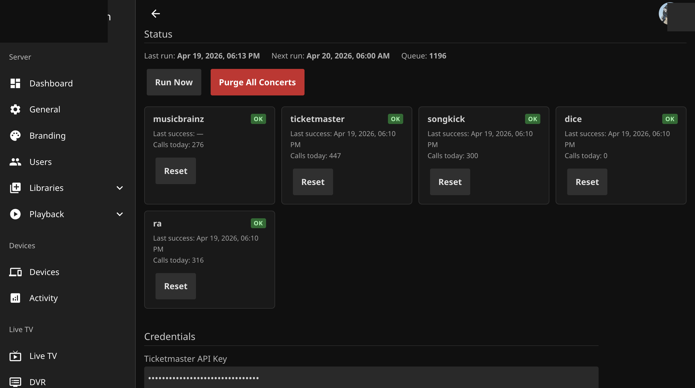
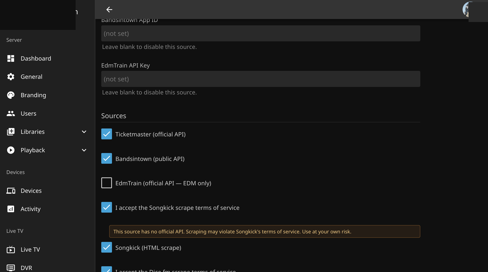
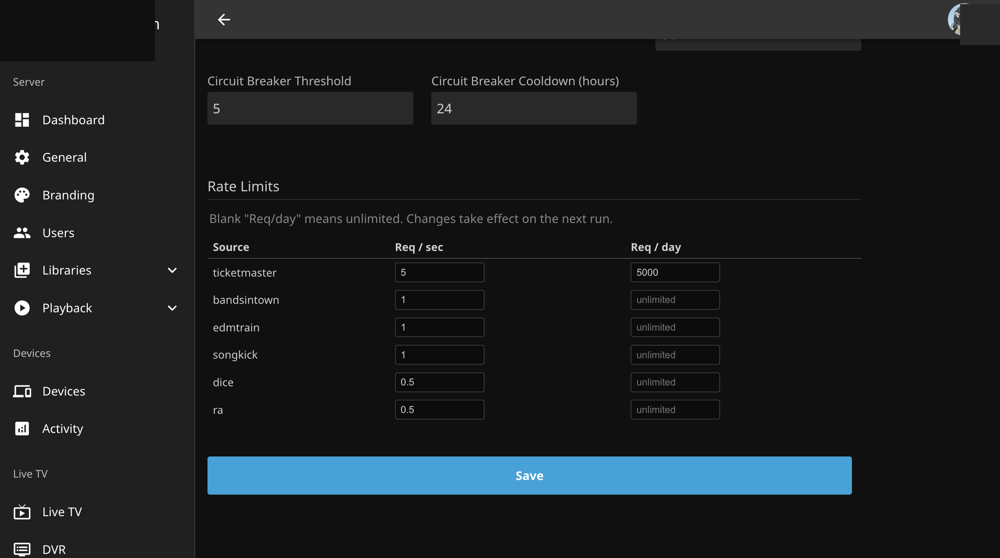

Install
1. Add the Concert Radar plugin repository to Jellyfin
In your Jellyfin web client: Dashboard → Plugins → Repositories → Add.
Name: Concert Radar
Repository URL:
https://alphagit.github.io/jellyfin-concert-radar/manifest.jsonOpen Catalog → Concert Radar → Install, then restart Jellyfin.
2. Install the prerequisites for the user-facing menu entry
The user-facing Concerts entry in the web client sidebar is built on top of the Plugin Pages framework. Add the IAmParadox27 plugin repository:
Name: IAmParadox27
Repository URL:
https://www.iamparadox.dev/jellyfin/plugins/manifest.jsonFrom the catalog, install File Transformation and Plugin Pages (pick the build whose targetAbi matches your Jellyfin version). Restart Jellyfin.
Concert Radar registers its Plugin Pages entry automatically on every startup. If either prerequisite is missing, the admin settings page still works — only the user-facing sidebar entry is skipped.
Features
- Six concert sources — Ticketmaster, Bandsintown, EdmTrain (official APIs), plus Songkick, Dice.fm, Resident Advisor (opt-in scrapers, ToS-gated).
- MusicBrainz artist resolution — per-source external IDs extracted from MBID URL relationships.
- Round-robin scheduler with circuit breakers — fair refresh without overloading any source.
- Per-source daily API call limits — respects provider quotas (e.g. Ticketmaster 5000/day).
- Geographic + genre filters — everything filtered server-side before storage.
- Month-grouped user view — chronological list, live filter + sort, direct source + ticket links.
- Admin dashboard — source health, run/purge, rate-limit editor, ToS opt-ins.
Screenshots






Manual download
If you'd rather install the plugin by hand:
mkdir -p /var/lib/jellyfin/plugins/ConcertRadar_0.1.0.0/
unzip jellyfin-concert-radar_0.1.0.0.zip -d /var/lib/jellyfin/plugins/ConcertRadar_0.1.0.0/
chown -R jellyfin:jellyfin /var/lib/jellyfin/plugins/ConcertRadar_0.1.0.0/
systemctl restart jellyfinCompatibility
- Jellyfin 10.11.x (production-tested on 10.11.6).
- .NET 9 plugin target framework.
- Plugin Pages + File Transformation must match your exact Jellyfin ABI for the user-facing menu entry. Admin page works on any 10.11.x.
Links
- Source code
- Full manual — configure, navigate, troubleshoot, with screenshots
- Configuration reference — every setting, default, range
- Technical spec
- Report a bug / request a feature